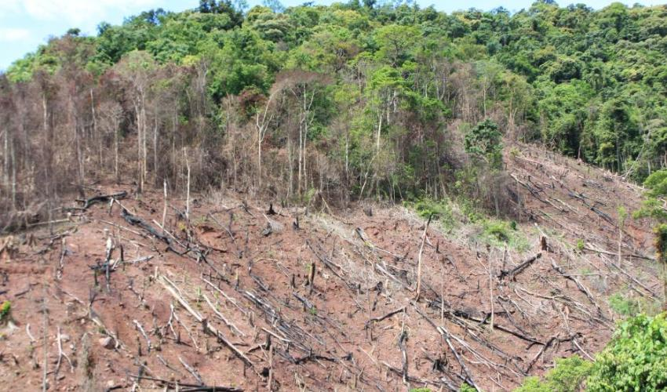

Causes of Typhoon
Greenhouse Gasses
Greenhouse gases trap more heat like carbon dioxide where the oceans absorb more heat which increases the sea surface temperature and sea level. A typhoon is formed when ocean water exceeds 26.5 Celsius or above and is met with cold air forming its cloud, creating a typhoon. As the process continues, it becomes a stronger typhoon. The Philippines are more prone to typhoons, as it is a warm country, and is located in the Pacific Ring of Fire.

Deforestation
Although deforestation isn't a direct cause of typhoons, it does affect the damage the typhoon does. Without trees, The soil can't hold and retain that much water, making flooding more severe. Trees also play a role by absorbing carbon dioxide and turning it into oxygen. Without trees, that cycle is disrupted, and more carbon dioxide goes into the atmosphere, contributing to global warming. Deforestation triggers mudslides during rainstorms. The soil clogged waterways, causing stagnation later linked to cholera outbreaks.

Effects of a typhoon
Destruction of Houses and Farms
Heavy rainfall triggered landslides and floods which destroyed farming and mining towns on the coast. flattening banana plantations destroyed. Some towns were left completely decimated.
CNN reported that the iron roofs of some buildings were swept away by the 175 mph winds. Over 200,00 people were stranded after the storm and unable to get anywhere due to the landslides and rising waters. The NDRRMC said there were 4,704 damaged houses in the region. Typhoon Pablo widely affected an estimated 41,000 families. A total of 1,901 fatalities. The damage cost 172.6 million for the infrastructure, 2,520,500 for agriculture and 3,22 million for the properties. Typhoon Pablo caused flooding and landslides, causing fatalities and missing persons to increase during that time. The reports show that 41,608 individuals have been evacuated so far in the Visayas and Mindanao regions.
Increase risk of communicable diseases
Heavy rainfall triggered landslides and floods which destroyed farming and mining towns on the coast. flattening banana plantations destroyed. Some towns were left completely decimated. CNN reported that the iron roofs of some buildings were swept away by the 175 mph winds. Over 200,00 people were stranded after the storm and unable to get anywhere due to the landslides and rising waters. The NDRRMC said there were 4,704 damaged houses in the region.
Typhoon Pablo widely affected an estimated 41,000 families. A total of 1,901 fatalities. The damage cost 172.6 million for the infrastructure, 2,520,500 for agriculture and 3,22 million for the properties.
Typhoon Pablo caused flooding and landslides, causing fatalities and missing persons to increase during that time. The reports show that 41,608 individuals have been evacuated so far in the Visayas and Mindanao regions. Many people are currently in the evacuation center, the evacuation center has been increasing overcrowding which can lead to the increased risk of communicable diseases and other increased risks of typhoid fever, cholera, leptospirosis, measles and influenza. The Evacuation Center also doesn't have enough water supplies because most of this water is already contaminated with human waste and garbage.